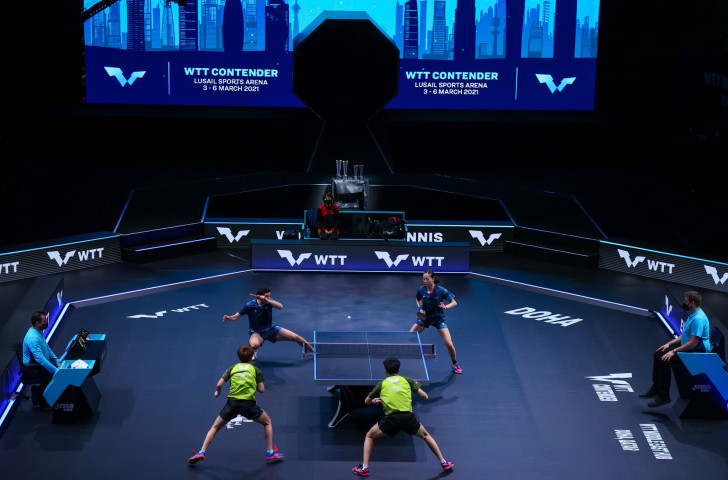

 Table tennis is a racket sport that includes using a wooden table with a net that divides the table into halves horizontally. A line, usually white, divides the table into halves vertically. To win the game, points are played to 11, with the serves alternating every 2 points. Sometimes players will tie at 10-10, which is called a deuce. At that point, the first person to get 2 points more than the other wins the match. A standard game of table tennis is out of 5 games, although professional matches, such as Olympic matches, play out of 7. To win, you need to win 3 out of 5 or 4 out of 7. Singles matches consist of two players standing on opposite sides of the table. Doubles players are two pairs of players standing on opposite sides of the table. There are no rules regarding serving for singles matches, but in a doubles match the server can only serve diagonally, meaning the ball must only bounce in the diagonals halved by the line in the middle of the table. Table tennis rackets can be extremely specialized. Rackets are made of wood and are covered on both sides using special types of rubber. These types of rubber are categorized into smooth rubber, short pip, long pip, and many others. Smooth rubber is the most used rubber for most players. Pips are little bumps that are on the surface of the rubbers that cause the ball to spin in certain ways. For example, short pips cause the ball to lose spin. On the other hand, long pips change the spin of the ball; a topspin ball will be returned with underspin and vice versa.